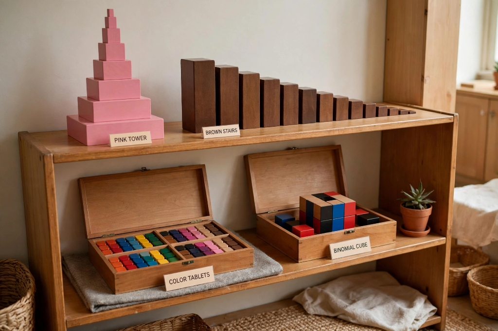
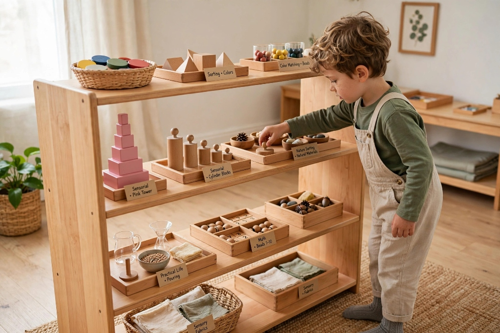
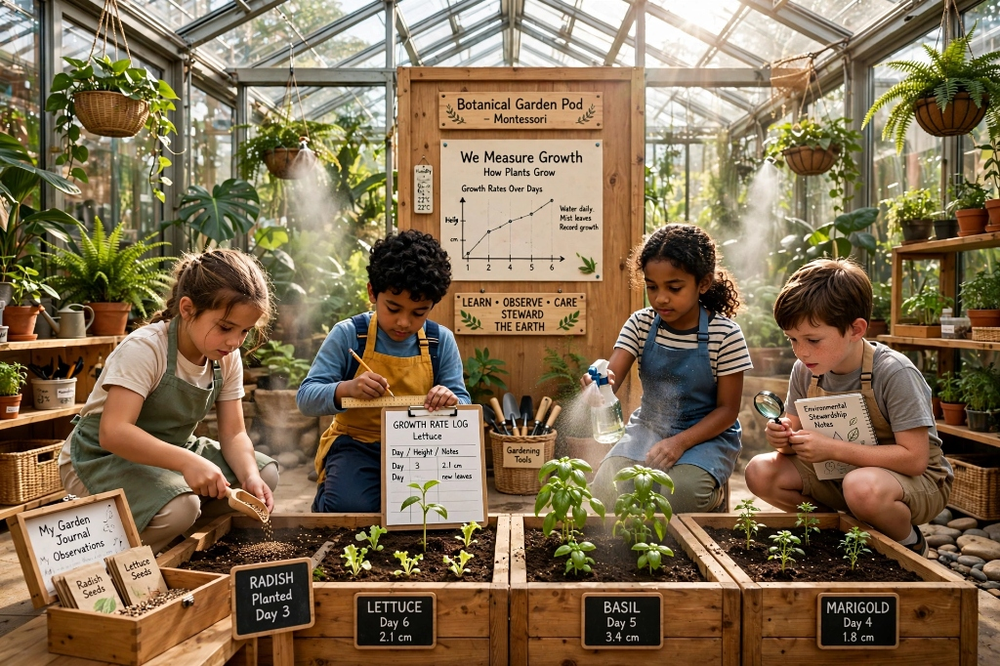
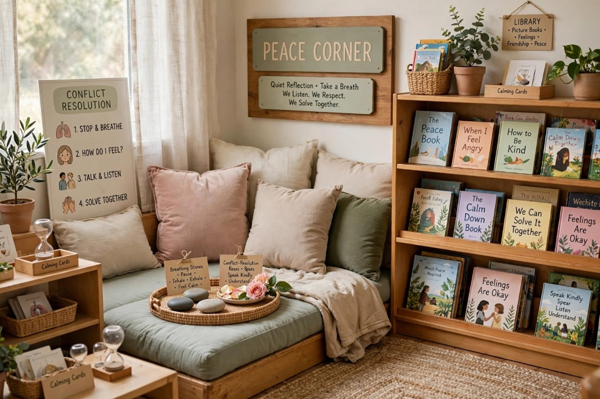
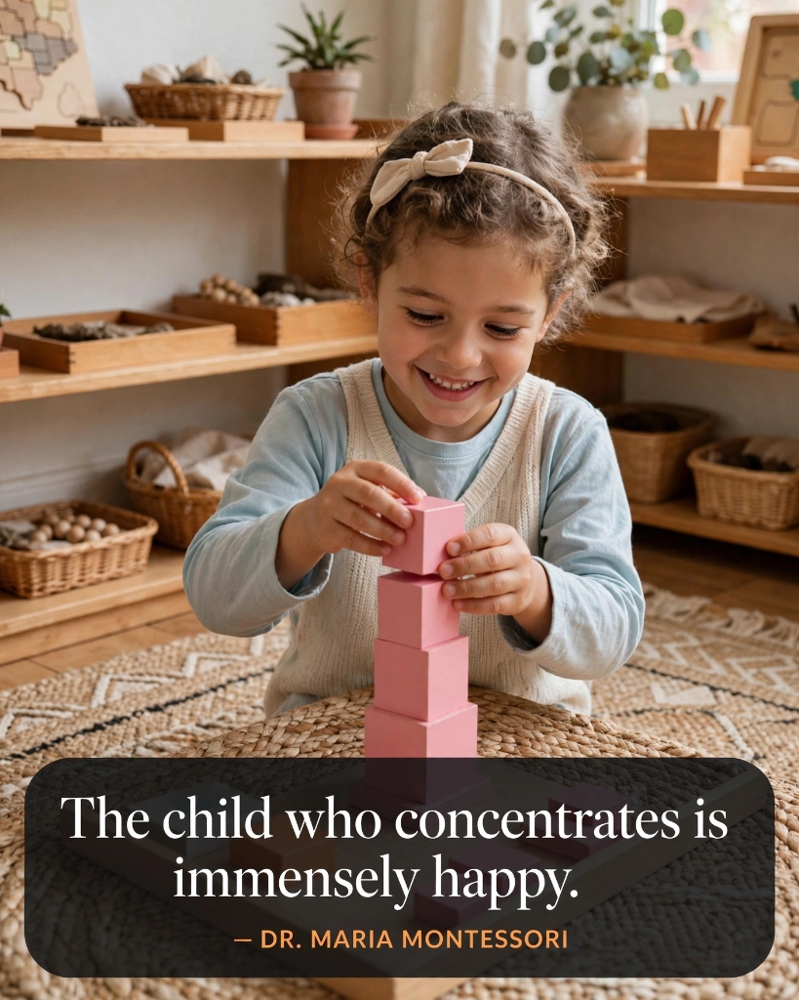
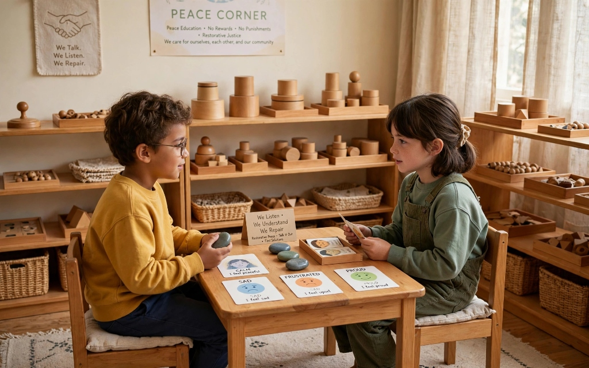

A nurturing, child-centered Montessori community where curiosity blossoms, independence thrives, and character grows with love.
KinderNest began as a cozy 6-child home learning pod founded by two certified AMI Montessori guides passionate about intimate, low-stress, self-paced childhood education.
Expanded to include a dedicated Children's House pod (ages 3-6) featuring authentic Nienhuis wooden materials, sandpaper letters, and golden beads mathematics.
Integrated our signature outdoor learning habitat: raised organic vegetable beds, compost stations, and natural woodworking benches for daily nature connection.
Introduced our Elementary Pod (ages 6-9) built on Maria Montessori's Cosmic Education, deep collaborative research, and real-world science expeditions.
Launched our custom parent dashboard, providing real-time daily work cycle observations, developmental milestones, tuition invoice downloads, and attendance records.
In a Montessori pod, every shelf, stool, glass pitcher, and work mat is proportioned precisely to the child's physical scale.

Open low shelves crafted from sustainably harvested beechwood, keeping all developmental materials accessible without adult intervention.

Classic pink towers, brown stairs, color tablets, and binomial cubes engineered to refine perceptual discrimination and mathematical reasoning.

Sunlit garden planters where children sow seeds, measure growth rates, mist leaves, and learn environmental stewardship every day.

A serene, soft-cushioned sanctuary with breathing stones, peaceful conflict-resolution roses, and rich picture books for quiet reflection.

We are dedicated to fostering a gentle sanctuary where children flourish intellectually, emotionally, and socially.
To honor each child's intrinsic desire to understand the world by providing a beautifully prepared environment that celebrates freedom within loving boundaries, respectful mentorship, and joyful independence.
To nurture a generation of curious, confident, and compassionate young people who trust their own capabilities, solve complex challenges creatively, and relate to others with natural empathy and grace.
Deep Respect for the child's developmental pace, Prepared Purpose in every Montessori material, and Community Warmth that welcomes parents as collaborative partners in their child's unfolding journey.
Why remaining in the same pod for three full years unlocks profound cognitive confidence and social mastery.
The youngest child enters the pod as a keen observer. They watch older peers master complex materials, absorb grace and courtesy routines, and find psychological safety in the classroom's predictable order.
With confidence established, the middle-year child dives deeply into academic materials. They move freely from sensorial geometry to dynamic addition with golden beads, eagerly tackling multi-step challenges.
The culmination year. The oldest children solidify their own learning by teaching younger classmates, leading morning peace circles, and demonstrating extraordinary empathy and intellectual poise.
Dr. Montessori identified four distinct six-year psychological stages through which every human being grows into adulthood.
Physical and biological creation of the individual. The child absorbs language, customs, and motor dexterity from their surrounding environment without conscious effort.
Intellectual independence and moral consciousness. The child asks "Why?" and "How?", seeks justice, and is fascinated by cosmic history, astronomy, and biology.
Emotional rebirth into society. Adolescents seek economic contribution, real-world farm/work experience (Erdkinder), and personal identity within a peer community.
The young adult assumes full responsibility for their life mission, contributing constructively to civilization with ethical purpose and global citizenship.
— Dr. Maria Montessori (Nobel Peace Prize Nominee)
Peace is not the mere absence of conflict; it is an active daily practice woven into every interaction at KinderNest. When a dispute arises over a material or personal boundary, children do not get sent to a punitive time-out corner.
Instead, they walk together to the Peace Corner and hold the Peace Rose. The child holding the flower speaks their feelings without interruption ("I felt sad when you grabbed the cylinder block before I was finished"), and then passes the rose to their peer. Through this sacred ritual, conflict becomes our richest lesson in empathy and restorative justice.

A Montessori guide's greatest skill is scientific observation—discerning each child's sensitive periods and gently presenting the exact material at the exact moment of readiness.
Every lead guide completed rigorous year-long graduate Montessori training, requiring over 1,200 hours of didactic theory, material fabrication, and supervised classroom observation.
With only 5 to 6 children per certified educator, our guides record nuanced daily observation logs, tracking fine-motor progression, emotional equilibrium, and cognitive triumphs.
Our faculty attends global Montessori research conferences, neurobiology symposiums, and pediatric non-violent communication workshops to continually refine our prepared environment.
Our Sunnyvale campus embodies the ecological reverence we teach our children, using non-toxic natural materials throughout.
Sustainably harvested beech and maple finished only with pure linseed oil and natural beeswax—zero VOC synthetic emissions.
Abundant natural daylighting that synchronizes children's circadian focus rhythms without harsh fluorescent flicker.
Underground cisterns filtering rainwater that children pump by hand to irrigate the living permaculture garden.
Over 150 indoor air-filtering plants (Boston ferns, peace lilies, spider plants) that the children water and dust daily.
We welcome prospective families to schedule an unhurried morning tour. Sit quietly in our prepared environment, speak directly with our Head of School, and feel the unique energy of KinderNest.